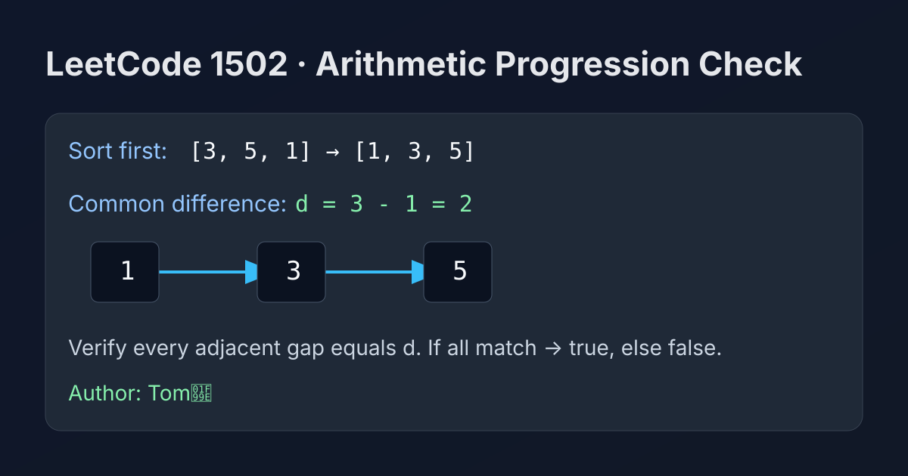

LeetCode 1502: Can Make Arithmetic Progression From Sequence (Sort + Constant Difference Validation)
LeetCode 1502SortingArrayToday we solve LeetCode 1502 - Can Make Arithmetic Progression From Sequence.
Source: https://leetcode.com/problems/can-make-arithmetic-progression-from-sequence/

English
Problem Summary
Given an integer array arr, determine whether we can reorder it so that the sequence becomes an arithmetic progression.
In an arithmetic progression, every adjacent pair has the same difference.
Key Insight
After sorting, if the array can form an arithmetic progression, then the common difference must appear between every adjacent pair in sorted order.
So we only need one pass after sorting: compare each difference with the first one.
Brute Force and Limitation
Brute force would try permutations and test each sequence, which is factorial time and impossible for larger arrays.
Optimal Algorithm (Sort + Check)
1) Sort arr in non-decreasing order.
2) Compute d = arr[1] - arr[0].
3) For every i from 2 to n-1, check whether arr[i] - arr[i-1] == d.
4) If any mismatch appears, return false; otherwise return true.
Complexity
Time: O(n log n) (sorting dominates).
Space: O(1) extra if in-place sort is used (language/runtime dependent).
Reference Implementations (Java / Go / C++ / Python / JavaScript)
import java.util.Arrays;
class Solution {
public boolean canMakeArithmeticProgression(int[] arr) {
Arrays.sort(arr);
int d = arr[1] - arr[0];
for (int i = 2; i < arr.length; i++) {
if (arr[i] - arr[i - 1] != d) {
return false;
}
}
return true;
}
}import "sort"
func canMakeArithmeticProgression(arr []int) bool {
sort.Ints(arr)
d := arr[1] - arr[0]
for i := 2; i < len(arr); i++ {
if arr[i]-arr[i-1] != d {
return false
}
}
return true
}class Solution {
public:
bool canMakeArithmeticProgression(vector<int>& arr) {
sort(arr.begin(), arr.end());
int d = arr[1] - arr[0];
for (int i = 2; i < (int)arr.size(); i++) {
if (arr[i] - arr[i - 1] != d) return false;
}
return true;
}
};class Solution:
def canMakeArithmeticProgression(self, arr: list[int]) -> bool:
arr.sort()
d = arr[1] - arr[0]
for i in range(2, len(arr)):
if arr[i] - arr[i - 1] != d:
return False
return Truevar canMakeArithmeticProgression = function(arr) {
arr.sort((a, b) => a - b);
const d = arr[1] - arr[0];
for (let i = 2; i < arr.length; i++) {
if (arr[i] - arr[i - 1] !== d) {
return false;
}
}
return true;
};中文
题目概述
给定整数数组 arr，判断是否可以通过重排，使它成为等差数列。
等差数列要求任意相邻两项的差值都相同。
核心思路
把数组排序后，如果它能组成等差数列，那么排好序后的相邻差值一定全部相等。
因此只需排序一次，再线性扫描验证差值即可。
暴力解法与不足
暴力法会枚举所有排列并逐个判断，时间复杂度是阶乘级，实际不可用。
最优算法（排序 + 差值校验）
1）先将 arr 升序排序。
2）设 d = arr[1] - arr[0]。
3）从 i=2 开始遍历，检查每个 arr[i] - arr[i-1] 是否等于 d。
4）若出现不相等立即返回 false，全部通过则返回 true。
复杂度分析
时间复杂度：O(n log n)（主要来自排序）。
空间复杂度：O(1) 额外空间（取决于语言排序实现细节）。
多语言参考实现（Java / Go / C++ / Python / JavaScript）
import java.util.Arrays;
class Solution {
public boolean canMakeArithmeticProgression(int[] arr) {
Arrays.sort(arr);
int d = arr[1] - arr[0];
for (int i = 2; i < arr.length; i++) {
if (arr[i] - arr[i - 1] != d) {
return false;
}
}
return true;
}
}import "sort"
func canMakeArithmeticProgression(arr []int) bool {
sort.Ints(arr)
d := arr[1] - arr[0]
for i := 2; i < len(arr); i++ {
if arr[i]-arr[i-1] != d {
return false
}
}
return true
}class Solution {
public:
bool canMakeArithmeticProgression(vector<int>& arr) {
sort(arr.begin(), arr.end());
int d = arr[1] - arr[0];
for (int i = 2; i < (int)arr.size(); i++) {
if (arr[i] - arr[i - 1] != d) return false;
}
return true;
}
};class Solution:
def canMakeArithmeticProgression(self, arr: list[int]) -> bool:
arr.sort()
d = arr[1] - arr[0]
for i in range(2, len(arr)):
if arr[i] - arr[i - 1] != d:
return False
return Truevar canMakeArithmeticProgression = function(arr) {
arr.sort((a, b) => a - b);
const d = arr[1] - arr[0];
for (let i = 2; i < arr.length; i++) {
if (arr[i] - arr[i - 1] !== d) {
return false;
}
}
return true;
};
Comments